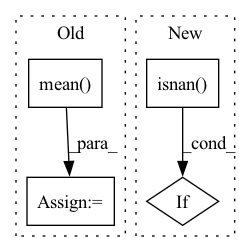

Pattern ID :39335

Before Change
- originals[:, 1, ...] / originals[:, 2, ...]) ** 2
br_ratio = (enhances[:, 2, ...] / enhances[:, 0, ...]
- originals[:, 2, ...] / originals[:, 0, ...]) ** 2
col_loss = (rg_ratio + gb_ratio + br_ratio).mean()
return col_loss
def get_kernels(device):
After Change
ori_avg[:, 2, ...], ori_avg[:, 0, ...])
col_loss = rg_loss + gb_loss + br_loss
if torch.any(torch.isnan(col_loss)).item():
sys.exit("Color Constancy loss is nan")
return col_loss
In pattern: SUPERPATTERN
Frequency: 3
Non-data size: 4
Instances
Fragment ID: 111553207
Project Name: bsun0802/zero-dce
Commit Name: affadb92ea9072d6d050ff26da4d536b33fb0d82
Time: 2020-06-24
Author: bos@usc.edu
File Name: code/utils.py
M Class Name: AnonimousClass
N Class Name: AnonimousClass
M Method Name: color_constency_loss3(2)
N Method Name: color_constency_loss3(2)
M Parent Class:
N Parent Class:
M File Name: code/utils.py
N File Name: code/utils.py
M Start Line: 59
M End Line: 65
N Start Line: 84
N End Line: 97
'>
Before Change
def masked_mape_np(y_true, y_pred, null_val=np.nan):
with np.errstate(divide="ignore", invalid="ignore"):
mask = mask_np(y_true, null_val)
mask /= mask.mean()
mape = np.abs((y_pred - y_true) / y_true)
mape = np.nan_to_num(mask * mape)
return np.mean(mape) * 100
After Change
def masked_mape_np(y_true, y_pred, null_val=np.nan):
with np.errstate(divide="ignore", invalid="ignore"):
if np.isnan(null_val):
mask = ~np.isnan(y_true)
else:
mask = np.not_equal(y_true, null_val)
'>
Fragment ID: 111553205
Project Name: guoshnbjtu/astgcn-r-pytorch
Commit Name: 768732e80a5816fe2a034afd5537a462ef7e3851
Time: 2020-01-06
Author: guoshn@bjtu.edu.cn
File Name: lib/metrics.py
M Class Name: AnonimousClass
N Class Name: AnonimousClass
M Method Name: masked_mape_np(3)
N Method Name: masked_mape_np(3)
M Parent Class:
N Parent Class:
M File Name: lib/metrics.py
N File Name: lib/metrics.py
M Start Line: 15
M End Line: 17
N Start Line: 8
N End Line: 15
'>
Before Change
// sum_x = torch.sum(predictions[i]-torch.mean(predictions[i]))
// sum_y = torch.sum(targets[i]-torch.mean(targets[i]))
sum_xy = torch.sum((predictions[i]-torch.mean(predictions[i])) * (targets[i]-torch.mean(targets[i])))
pow_x = torch.sum(torch.pow(predictions[i]-torch.mean(predictions[i]), 2))
pow_y = torch.sum(torch.pow(targets[i]-torch.mean(targets[i]), 2))
pearson = (sum_xy / torch.sqrt(pow_x * pow_y) + eps).float()
rst += pearson
rst = rst / predictions.shape[0]
return rst
After Change
N = predictions.shape[1]
pearson = (N * sum_xy - sum_x * sum_y) / (
torch.sqrt((N * sum_x2 - torch.pow(sum_x, 2)) * (N * sum_y2 - torch.pow(sum_y, 2)))) + eps
if torch.isnan(pearson):
print("pearson is nan")
print("N :", N, "sum_xy :", sum_xy, "sum_x :", sum_x, "sum_y :", sum_y, "sum_x2 :", sum_x2, "sum_y2 :", sum_y2)
pearson = 0
'>
Fragment ID: 111553203
Project Name: tvs-ai/pytorch_rppgs
Commit Name: 79fa5ea2fc22ff76197fc5272382574b54608880
Time: 2023-01-02
Author: forownsake@gmail.com
File Name: vid2bp/nets/loss/loss.py
M Class Name: AnonimousClass
N Class Name: AnonimousClass
M Method Name: Neg_Pearson_Loss(2)
N Method Name: Neg_Pearson_Loss(2)
M Parent Class:
N Parent Class:
M File Name: vid2bp/nets/loss/loss.py
N File Name: vid2bp/nets/loss/loss.py
M Start Line: 114
M End Line: 173
N Start Line: 114
N End Line: 191